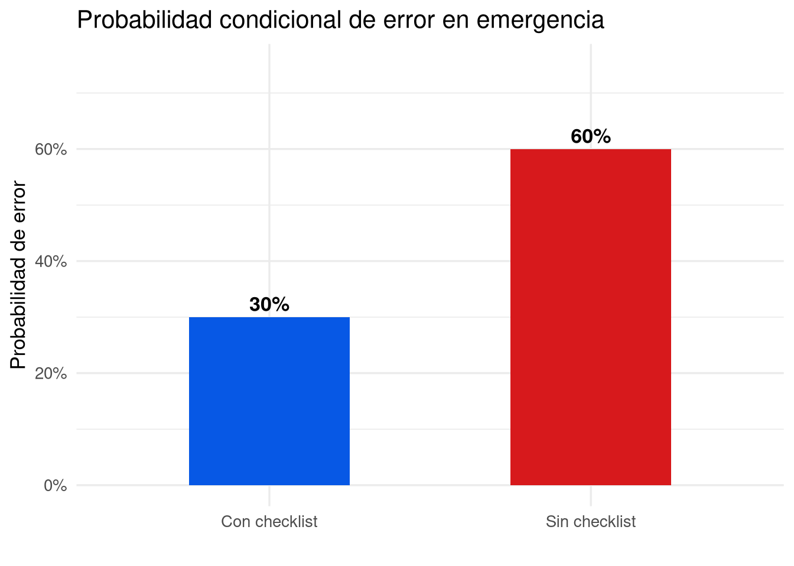
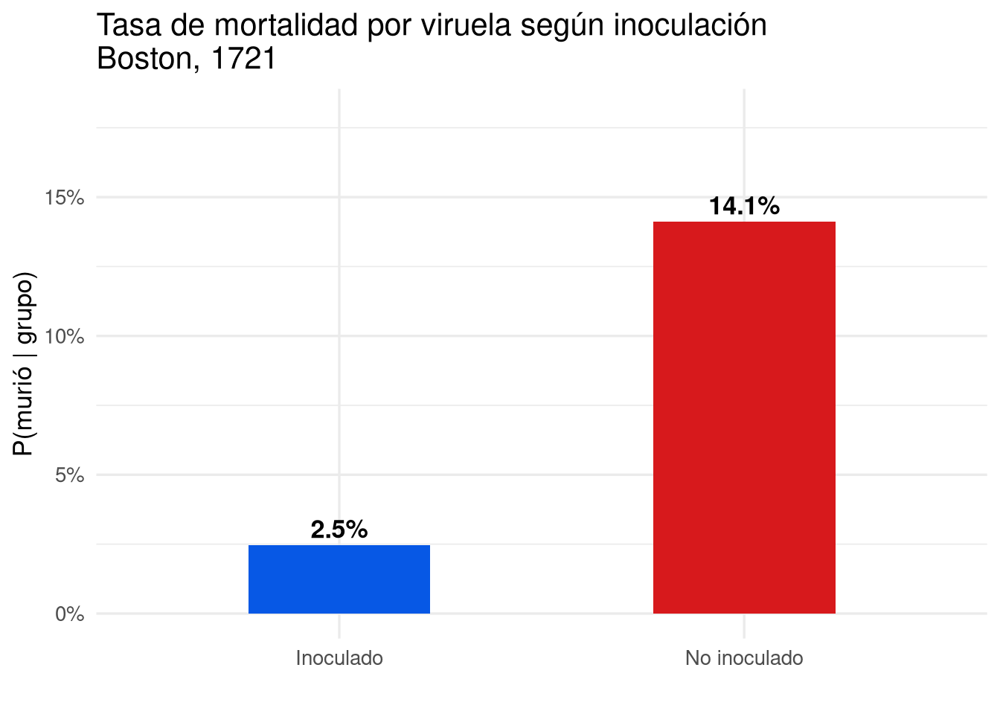
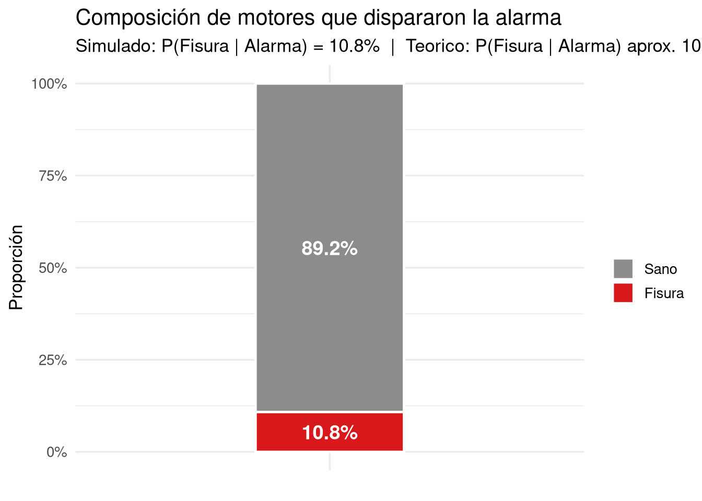

| Checklist | Sin error | Con error | Total |
|---|---|---|---|
| Sí | 112 | 48 | 160 |
| No | 64 | 96 | 160 |
| Total | 176 | 144 | 320 |
Lección 9: Probabilidad condicional y teorema de Bayes
EPDI
Probabilidad condicional, tablas de contingencia, regla general de la multiplicación, independencia, diagramas de árbol y teorema de Bayes. Aplicaciones en escenarios aeronáuticos y médicos.
Resumen
Esta lección desarrolla la probabilidad condicional como herramienta para actualizar creencias a partir de nueva información. Se estudian las probabilidades marginales, conjuntas y condicionales usando tablas de contingencia, con dos ejemplos detallados: el uso de checklists en simulacros de vuelo y la inoculación contra la viruela en Boston en 1721. Se introduce la relación entre independencia y probabilidad condicional, los diagramas de árbol para procesos secuenciales, y el teorema de Bayes para invertir condicionales, incluyendo un ejemplo de mantenimiento aeronáutico y su simulación en R.
1 Objetivos de la lección
Al finalizar esta lección, serás capaz de:
- Distinguir entre probabilidad marginal, conjunta y condicional.
- Calcular probabilidades condicionales a partir de una tabla de contingencia.
- Aplicar la regla general de la multiplicación \(P(A \text{ y } B) = P(A \mid B) \cdot P(B)\).
- Verificar si dos eventos son independientes usando la definición condicional.
- Construir e interpretar diagramas de árbol para organizar procesos secuenciales.
- Utilizar el teorema de Bayes para invertir el orden de una probabilidad condicional.
- Simular escenarios de pruebas diagnósticas con R y contrastar resultados empíricos con los teóricos.
2 Probabilidad condicional: el corazón de la inferencia
Hasta ahora hemos calculado probabilidades de eventos aislados o combinados bajo independencia. Pero en el mundo real casi nunca partimos de cero: poseemos información previa que modifica nuestras creencias. La probabilidad condicional captura exactamente esa idea: ¿cuál es la probabilidad de un evento \(A\) sabiendo que otro evento \(B\) ya ocurrió?
NotaDefinición: Probabilidad condicional
La probabilidad condicional de \(A\) dado \(B\) se denota \(P(A \mid B)\) y se lee «probabilidad de \(A\) dado \(B\)». Se calcula como
\[P(A \mid B) = \frac{P(A \text{ y } B)}{P(B)},\]
siempre que \(P(B) > 0\). La barra vertical \(\mid\) significa «dado que».
Intuitivamente, al conocer que \(B\) ocurrió restringimos nuestro espacio de posibilidades a aquellos resultados donde \(B\) es verdadero; dentro de ese subconjunto medimos la proporción de casos en que también ocurre \(A\).
3 Tablas de contingencia y los tres tipos de probabilidad
Una tabla de contingencia (o tabla de doble entrada) es la herramienta natural para trabajar con probabilidades condicionales cuando tenemos dos variables categóricas. En la Lección 7 estudiamos su construcción; ahora añadimos el lenguaje formal de la probabilidad.
3.1 Ejemplo aeronáutico: checklist electrónico y errores en emergencia
Se registraron 320 simulacros de vuelo en los que se observó si la tripulación usaba un checklist electrónico (Sí / No) y si se cometía algún error en los procedimientos de emergencia (Sí / No). Los datos se resumen en la siguiente tabla de contingencia.
3.2 Probabilidad marginal
Es la probabilidad de una sola variable, ignorando la otra. Se obtiene dividiendo los totales de fila o columna por el gran total:
\[P(\text{checklist}) = \frac{160}{320} = 0{,}50, \qquad P(\text{con error}) = \frac{144}{320} = 0{,}45.\]
3.3 Probabilidad conjunta
Es la probabilidad de que ocurran simultáneamente dos resultados, uno de cada variable. Se calcula dividiendo la celda correspondiente por el total general:
\[P(\text{checklist y sin error}) = \frac{112}{320} = 0{,}35.\]
3.4 Probabilidad condicional
Fijamos una condición y dentro de ese subgrupo medimos la frecuencia relativa del evento de interés. Por ejemplo, dentro de los 160 simulacros donde se usó checklist:
\[P(\text{sin error} \mid \text{checklist}) = \frac{112}{160} = 0{,}70.\]
De manera análoga, dentro de los 160 simulacros donde no se usó checklist:
\[P(\text{sin error} \mid \text{no checklist}) = \frac{64}{160} = 0{,}40, \qquad P(\text{con error} \mid \text{no checklist}) = \frac{96}{160} = 0{,}60.\]
La diferencia entre las tasas de éxito —\(0{,}70\) con checklist frente a \(0{,}40\) sin él— sugiere que el uso del checklist está asociado con una menor tasa de errores. Nótese que esta comparación es puramente observacional; en la sección sobre independencia formalizaremos si esa asociación es estadísticamente relevante.
cond_df <- data.frame(
checklist = c("Con checklist", "Sin checklist"),
prob_error = c(48 / 160, 96 / 160) # 0.30 y 0.60
)
ggplot(cond_df, aes(x = checklist, y = prob_error, fill = checklist)) +
geom_col(width = 0.5) +
geom_text(aes(label = percent(prob_error, accuracy = 1)),
vjust = -0.4, size = 4.5, fontface = "bold") +
scale_fill_manual(values = c("#0758E5", "#D7191C")) +
scale_y_continuous(labels = percent_format(accuracy = 1),
limits = c(0, 0.75)) +
labs(
x = "",
y = "Probabilidad de error",
title = "Probabilidad condicional de error en emergencia"
) +
theme_minimal(base_size = 13) +
theme(legend.position = "none")
3.5 Ejemplo histórico: la viruela en Boston, 1721
En 1721 la ciudad de Boston sufrió un brote de viruela. Los médicos de la época creían que la inoculación —exponer a la persona a la enfermedad en forma controlada— reducía la probabilidad de muerte. Se dispone de datos de 6.224 personas expuestas al virus; cada caso registra si fue inoculada y si sobrevivió.
| Inoculado | Vivió | Murió | Total |
|---|---|---|---|
| Sí | 238 | 6 | 244 |
| No | 5136 | 844 | 5980 |
| Total | 5374 | 850 | 6224 |
Las probabilidades condicionales relevantes se obtienen dividiendo cada celda por el total de su fila:
\[P(\text{vivió} \mid \text{inoculado}) = \frac{238}{244} \approx 0{,}975, \qquad P(\text{vivió} \mid \text{no inoculado}) = \frac{5136}{5980} \approx 0{,}859.\]
\[P(\text{murió} \mid \text{inoculado}) = \frac{6}{244} \approx 0{,}025, \qquad P(\text{murió} \mid \text{no inoculado}) = \frac{844}{5980} \approx 0{,}141.\]
La tasa de mortalidad de los inoculados (~2,5 %) es aproximadamente seis veces menor que la de los no inoculados (~14,1 %), lo que sugiere una fuerte asociación entre la inoculación y la supervivencia. No obstante, como la inoculación fue voluntaria (estudio observacional), no podemos concluir causalidad directa; podrían existir variables de confusión como el acceso a mejores cuidados médicos.

4 Regla general de la multiplicación
La definición de probabilidad condicional puede reordenarse algebraicamente para obtener la regla general de la multiplicación, también llamada regla del producto:
ImportanteRegla general de la multiplicación
Para cualquier par de eventos \(A\) y \(B\):
\[P(A \text{ y } B) = P(A \mid B) \cdot P(B).\]
Esta fórmula es válida independientemente de si \(A\) y \(B\) son independientes o no. Cuando son independientes, \(P(A \mid B) = P(A)\) y la fórmula se reduce a \(P(A \text{ y } B) = P(A) \cdot P(B)\), recuperando la regla de la Lección 8.
Además, dado un mismo condicionante \(B\), los eventos \(A\) y su complemento \(A^c\) cubren todo el espacio, de modo que:
\[P(A \mid B) + P(A^c \mid B) = 1 \implies P(A \mid B) = 1 - P(A^c \mid B).\]
Verificación con los datos de Boston. Solo conociendo que el 96,08 % de las personas no fueron inoculadas y que el 85,89 % de las no inoculadas sobrevivió, podemos reconstruir la probabilidad conjunta:
\[P(\text{no inoculado y vivió}) = P(\text{vivió} \mid \text{no inoculado}) \times P(\text{no inoculado}) = 0{,}8589 \times 0{,}9608 \approx 0{,}8252,\]
lo que coincide con el valor de la tabla (\(5136/6224 \approx 0{,}8252\)). \(\checkmark\)
5 Independencia y probabilidad condicional
En la Lección 8 definimos dos eventos como independientes si el conocimiento de uno no afecta la probabilidad del otro. Ahora podemos expresar esa idea en términos condicionales:
NotaDefinición: Independencia mediante probabilidad condicional
Dos eventos \(A\) y \(B\) son independientes si y solo si
\[P(A \mid B) = P(A).\]
De manera equivalente, \(P(A \text{ y } B) = P(A) \cdot P(B)\). Ambas condiciones son equivalentes y cualquiera puede usarse para verificar independencia.
Si \(A\) y \(B\) son independientes, saber que \(B\) ocurrió no cambia en nada la probabilidad de \(A\); el condicionamiento es «inútil». En cambio, si \(P(A \mid B) \neq P(A)\), existe una dependencia entre los eventos.
5.1 Verificación con el ejemplo del checklist
Comprobemos si «usar checklist» y «no cometer errores» son independientes:
\[P(\text{sin error}) = \frac{176}{320} = 0{,}55.\]
\[P(\text{sin error} \mid \text{checklist}) = 0{,}70 \neq 0{,}55.\]
Como las dos probabilidades difieren, los eventos no son independientes: usar el checklist modifica (en este caso, aumenta) la probabilidad de no cometer errores.
Podemos verificar lo mismo con la regla del producto:
\[P(\text{checklist}) \times P(\text{sin error}) = 0{,}50 \times 0{,}55 = 0{,}275 \neq 0{,}35 = P(\text{checklist y sin error}).\]
La desigualdad confirma la dependencia.
5.2 El caso de los dados: un ejemplo de independencia genuina
Sea \(X\) el resultado del primer dado e \(Y\) el del segundo (dados honestos, lanzamientos independientes). Usando la fórmula condicional:
\[P(Y = 1 \mid X = 1) = \frac{P(Y = 1 \text{ y } X = 1)}{P(X = 1)} = \frac{1/36}{1/6} = \frac{1}{6} = P(Y = 1).\]
El conocimiento de \(X\) no modifica la probabilidad de \(Y\), como esperamos de procesos físicamente separados. Este razonamiento también explica la falacia del jugador: si en una ruleta han salido cinco veces seguidas negro, la probabilidad de rojo en el siguiente giro sigue siendo 18/37 (o 18/38 en ruleta americana), porque cada giro es independiente de los anteriores.
6 Diagramas de árbol: organizar la información secuencial
Cuando un proceso puede descomponerse en etapas —donde cada etapa depende de la anterior— los diagramas de árbol permiten visualizar las probabilidades condicionales y calcular probabilidades conjuntas multiplicando a lo largo de cada camino.
Regla de construcción: las ramas primarias llevan probabilidades marginales; las ramas secundarias (y terciarias, si las hay) llevan probabilidades condicionales respecto al camino recorrido. El producto de las probabilidades a lo largo de un camino es la probabilidad conjunta de ese resultado final.
6.1 Árbol del ejemplo de checklist
+-- Sin error (0,70) -> 0,50 x 0,70 = 0,350
Checklist (0,50)-|
+-- Con error (0,30) -> 0,50 x 0,30 = 0,150
+-- Sin error (0,40) -> 0,50 x 0,40 = 0,200
No checklist (0,50)-|
+-- Con error (0,60) -> 0,50 x 0,60 = 0,300
------
Suma total: 1,000Nótese que la suma de las cuatro probabilidades conjuntas es 1, como debe ser para una distribución completa del espacio muestral.
6.2 Árbol del ejemplo de Boston (viruela)
+-- Vivió (0,9754) -> 0,0392 x 0,9754 = 0,03824
Inoculado (0,0392)|
+-- Murió (0,0246) -> 0,0392 x 0,0246 = 0,00096
+-- Vivió (0,8589) -> 0,9608 x 0,8589 = 0,82523
No inoculado (0,9608)|
+-- Murió (0,1411) -> 0,9608 x 0,1411 = 0,13557
-------
Suma total: 1,00000El árbol de Boston también permite «invertir» la condicional mediante Bayes (ver sección siguiente): si sabemos que una persona murió, ¿cuál es la probabilidad de que haya sido inoculada? El árbol nos da todos los ingredientes necesarios.
7 Teorema de Bayes: invertir la condicional
A menudo conocemos \(P(B \mid A)\) pero necesitamos \(P(A \mid B)\). El teorema de Bayes proporciona la fórmula exacta para realizar esa inversión.
ImportanteTeorema de Bayes
Si \(A_1, A_2, \ldots, A_k\) son todos los resultados posibles de la primera variable (mutuamente excluyentes y exhaustivos) y \(B\) es un resultado de la segunda, entonces
\[P(A_i \mid B) = \frac{P(B \mid A_i) \cdot P(A_i)}{\displaystyle\sum_{j=1}^{k} P(B \mid A_j) \cdot P(A_j)}.\]
El denominador es simplemente \(P(B)\), la probabilidad marginal de \(B\), expresada como suma ponderada de todas las formas en que \(B\) puede ocurrir.
La clave intuitiva es la siguiente: la probabilidad marginal \(P(A_i)\) se denomina probabilidad a priori («antes de observar \(B\)»); una vez que observamos \(B\), la actualizamos a \(P(A_i \mid B)\), la probabilidad a posteriori. Esta idea de actualización de creencias es el fundamento de la estadística bayesiana.
7.2 Árbol de decisión para el ejemplo del sensor
+-- Alarma (0,95) -> 0,01 x 0,95 = 0,00950
Fisura (0,01) -|
+-- No alarma (0,05) -> 0,01 x 0,05 = 0,00050
+-- Alarma (0,08) -> 0,99 x 0,08 = 0,07920
Sano (0,99) -|
+-- No alarma (0,92) -> 0,99 x 0,92 = 0,91080
-------
Suma total: 1,00000\(P(\text{alarma}) = 0{,}00950 + 0{,}07920 = 0{,}08870\) \(\checkmark\)
\(P(\text{fisura} \mid \text{alarma}) = \dfrac{0{,}00950}{0{,}08870} \approx 0{,}107\) \(\checkmark\)
7.3 Simulación en R
La simulación permite verificar empíricamente el resultado teórico y observar cómo la Ley de los Grandes Números hace que la proporción observada converja al valor teórico.
set.seed(314)
n <- 50000
# 1. Generamos el estado del motor: 1 = fisura (1%), 0 = sano (99%)
motor <- rbinom(n, size = 1, prob = 0.01)
# 2. Determinamos si la alarma suena:
# - Si hay fisura: P(alarma) = 0.95 (sensibilidad)
# - Si está sano: P(alarma) = 0.08 (tasa de falsos positivos)
prob_alarma <- ifelse(motor == 1, 0.95, 0.08)
alarma <- rbinom(n, size = 1, prob = prob_alarma)
# 3. Ensamblamos el data frame con etiquetas legibles
df_motor <- data.frame(
fisura = factor(motor, levels = c(0, 1), labels = c("Sano", "Fisura")),
alarma = factor(alarma, levels = c(0, 1), labels = c("No", "Alarma"))
)
# 4. Estimamos P(fisura | alarma) a partir de la simulación
tab <- table(df_motor)
P_sim <- tab["Fisura", "Alarma"] / sum(tab[, "Alarma"])
# 5. Preparamos el subconjunto de motores con alarma para visualizar
df_alarma <- df_motor |>
filter(alarma == "Alarma") |>
count(fisura) |>
mutate(prop = n / sum(n))
ggplot(df_alarma, aes(x = "Alarma", y = prop, fill = fisura)) +
geom_col(width = 0.35, color = "white", linewidth = 0.8) +
geom_text(
aes(label = percent(prop, accuracy = 0.1)),
position = position_stack(vjust = 0.5),
size = 5, color = "white", fontface = "bold"
) +
scale_fill_manual(values = c("Fisura" = "#D7191C", "Sano" = "gray55")) +
scale_y_continuous(labels = percent_format()) +
labs(
x = "",
y = "Proporción",
fill = "",
title = "Composición de motores que dispararon la alarma",
subtitle = paste0(
"Simulado: P(Fisura | Alarma) = ", percent(P_sim, accuracy = 0.1),
" | Teorico: P(Fisura | Alarma) aprox. 10,7 %"
)
) +
theme_minimal(base_size = 13) +
theme(axis.text.x = element_blank())
La diferencia entre el valor simulado y el teórico es pequeña porque \(n = 50.000\) es un tamaño muestral grande. Con \(n = 100\) la discrepancia sería mucho mayor; con \(n = 1.000.000\) sería prácticamente nula. Esto es precisamente lo que garantiza la Ley de los Grandes Números: a medida que \(n \to \infty\), la proporción observada converge casi seguramente a la probabilidad teórica.
8 Síntesis de reglas
| Concepto | Fórmula | Condición de validez |
|---|---|---|
| Probabilidad condicional | \(P(A\mid B)=\dfrac{P(A\cap B)}{P(B)}\) | \(P(B)>0\) |
| Regla del producto (general) | \(P(A\cap B)=P(A\mid B)\cdot P(B)\) | Siempre |
| Regla del producto (independiente) | \(P(A\cap B)=P(A)\cdot P(B)\) | \(A \perp B\) |
| Independencia (equivalencia) | \(P(A\mid B)=P(A)\) | \(P(B)>0\) |
| Complemento condicional | \(P(A\mid B)=1-P(A^c\mid B)\) | \(P(B)>0\) |
| Suma de condicionales | \(\sum_i P(A_i\mid B)=1\) | \(\{A_i\}\) partición |
| Teorema de Bayes | \(P(A_i\mid B)=\dfrac{P(B\mid A_i)P(A_i)}{\sum_j P(B\mid A_j)P(A_j)}\) | \(\{A_j\}\) partición, \(P(B)>0\) |
9 Cuestionario grupal
Responde cada pregunta mostrando los cálculos completos y justificando las reglas que aplicas.
Checklist y errores. Con los datos de la tabla de contingencia de esta lección, calcula:
- \(P(\text{sin error} \mid \text{no checklist})\)
- \(P(\text{checklist} \mid \text{sin error})\) — nota que aquí «inviertes» la condición; usa la definición de probabilidad condicional.
- ¿Son independientes los eventos «usar checklist» y «no cometer errores»? Prueba con ambas condiciones equivalentes de la definición de independencia.
Árbol de decisiones. Dibuja el diagrama de árbol completo para el ejemplo del checklist. Escribe en cada rama las probabilidades marginales, condicionales y conjuntas. Verifica que la suma de las probabilidades conjuntas es 1.
Motor y alarma. Supón que la prevalencia de fisura aumenta al 5 % y la tasa de falsos positivos se reduce al 5 % (sensibilidad igual, 95 %). Calcula \(P(\text{fisura} \mid \text{alarma})\) con estos nuevos parámetros. ¿Por qué cambia tanto la probabilidad respecto al ejemplo original?
Viruela en Boston, 1721. A partir de los datos de la Tabla 2:
- Calcula \(P(\text{vivió} \mid \text{inoculado})\) y \(P(\text{vivió} \mid \text{no inoculado})\) usando la fórmula de probabilidad condicional.
- ¿La inoculación y el resultado son independientes? Prueba con la regla del producto.
- ¿Por qué no podemos concluir que la inoculación causó la mayor supervivencia? ¿Qué tipo de estudio sería necesario?
Resultados de examen. En un curso, el 13 % de los estudiantes obtiene A en el parcial. De estos, el 47 % obtiene A en el final; de los que no obtuvieron A en el parcial, solo el 11 % obtiene A en el final. Si un estudiante elegido al azar obtiene A en el final, ¿cuál es la probabilidad de que también haya obtenido A en el parcial? Construye el diagrama de árbol y aplica el teorema de Bayes.
Congestión en plataforma (Bayes con tres causas). Un aeropuerto pequeño tiene tres tipos de eventos que pueden causar congestión en la plataforma: mantenimiento de pista (15 % de los días), llegada de vuelos militares (5 % de los días) y ningún evento especial (80 % de los días). Cuando hay mantenimiento, la congestión ocurre el 60 % de las veces; con vuelos militares, el 90 %; sin eventos, solo el 10 %. Si hoy hay congestión, ¿cuál es la probabilidad de que se deba a llegada de vuelos militares? Nota: este problema tiene la misma estructura que el ejercicio del estacionamiento universitario del libro de referencia; compara los resultados.
Prof. Hans Sigrist — Colegio Portaliano, San Felipe